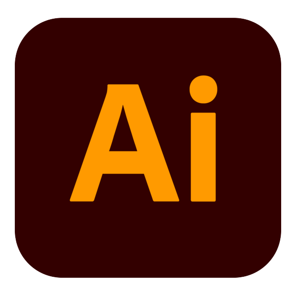
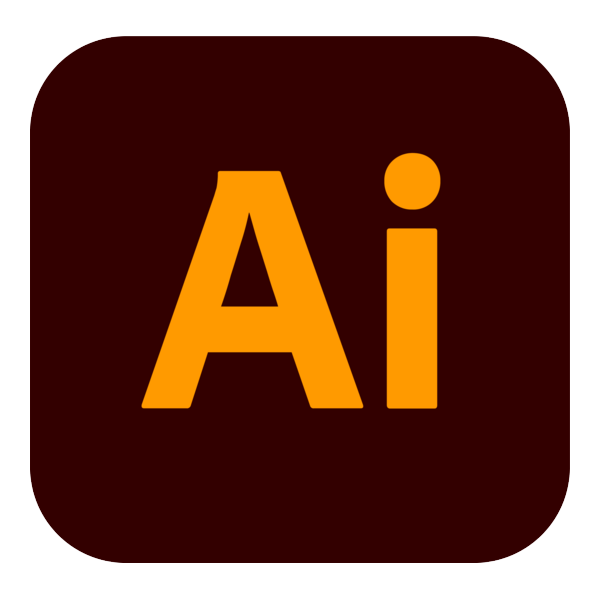
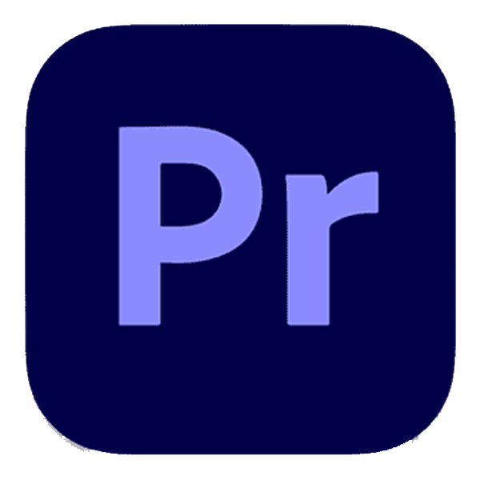
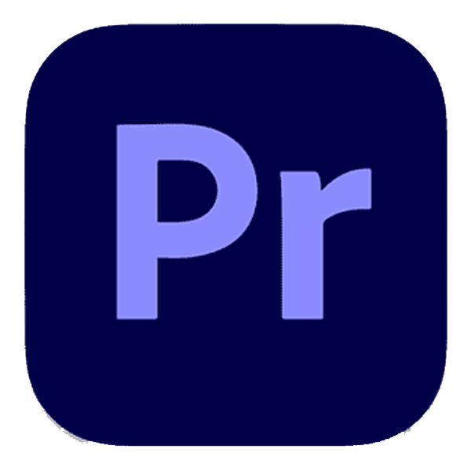
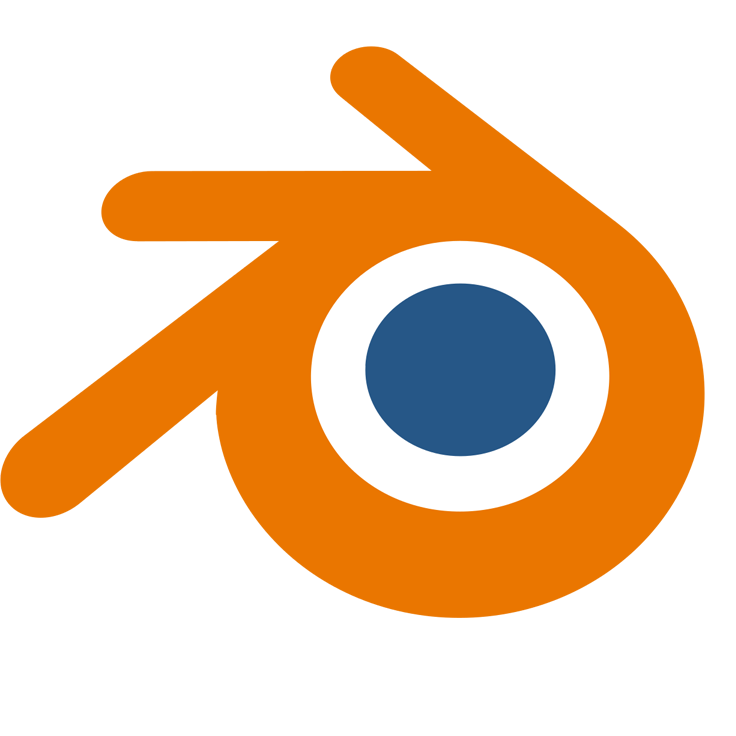
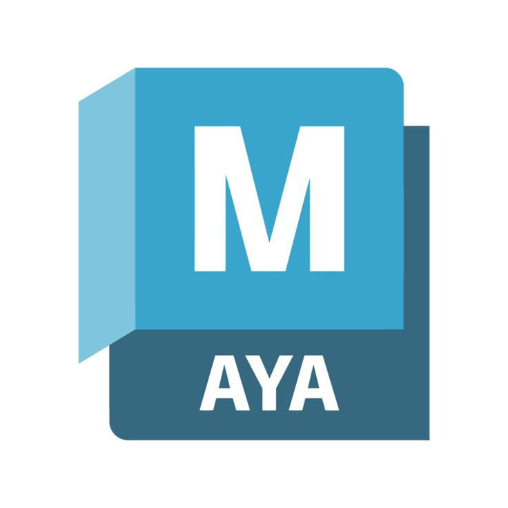
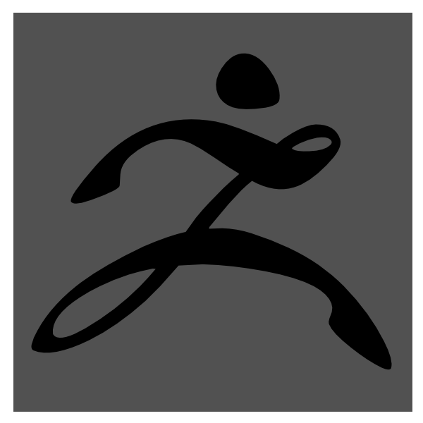
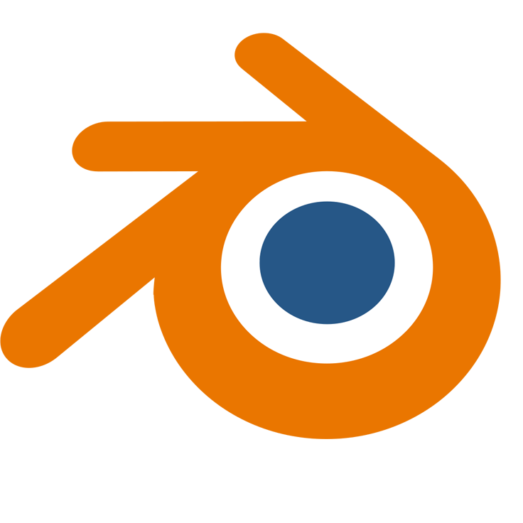
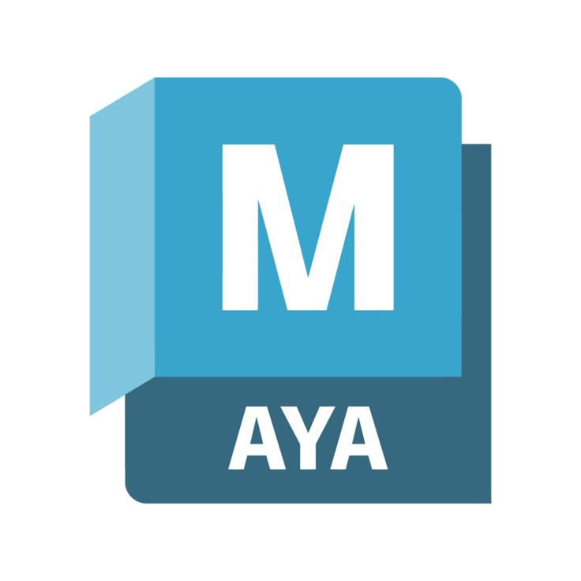
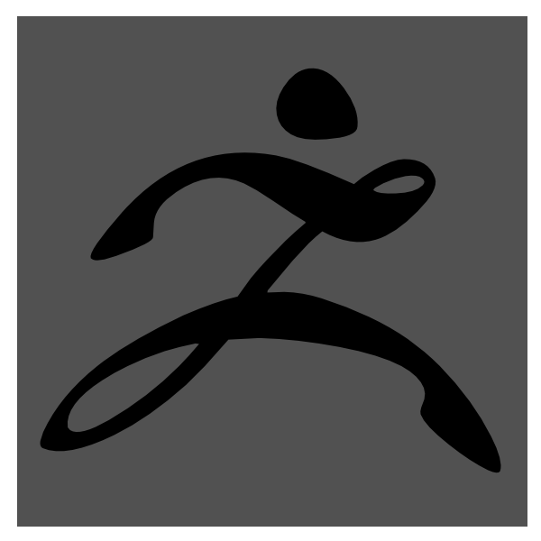

Sobre mí
Soy Irene Canalejo, diseñadora gráfica entusiasta, creativa y con formación especializada en arte digital, ilustración y entornos interactivos. Me gusta trabajar en equipo y aportar soluciones visuales que conecten con las personas.
🎓 Formación Académica
- Grado Superior en Diseño Gráfico – Escola Pau Gargallo (2024)
- Grado Superior en Animación 3D – CEV (2020)
- Bachillerato Artístico – Institut Alexandre Satorras (2018)
💼 Experiencia Relevante
- Becaria en Diseño Gráfico – Vertisol (2023)
- Becaria en Desarrollo de Videojuegos – Omnidrone (2020)
🧠 Habilidades Técnicas
Creatividad, atención al detalle, adaptabilidad, trabajo en equipo, pensamiento visual.
🛠️ Programas que utilizo
 


 

 




